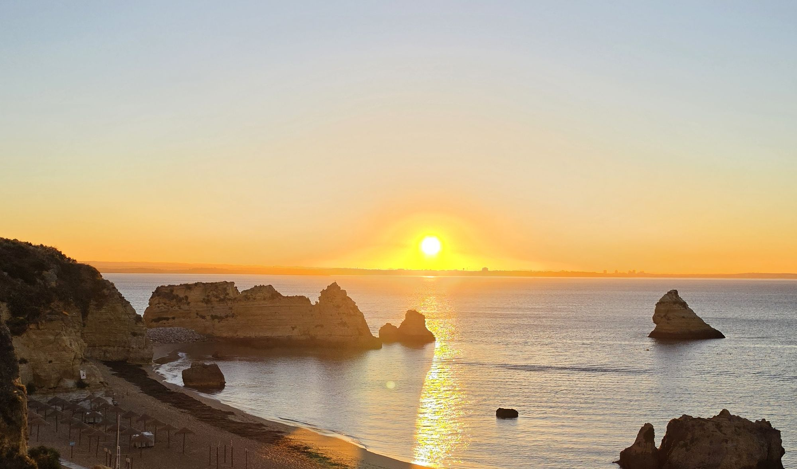
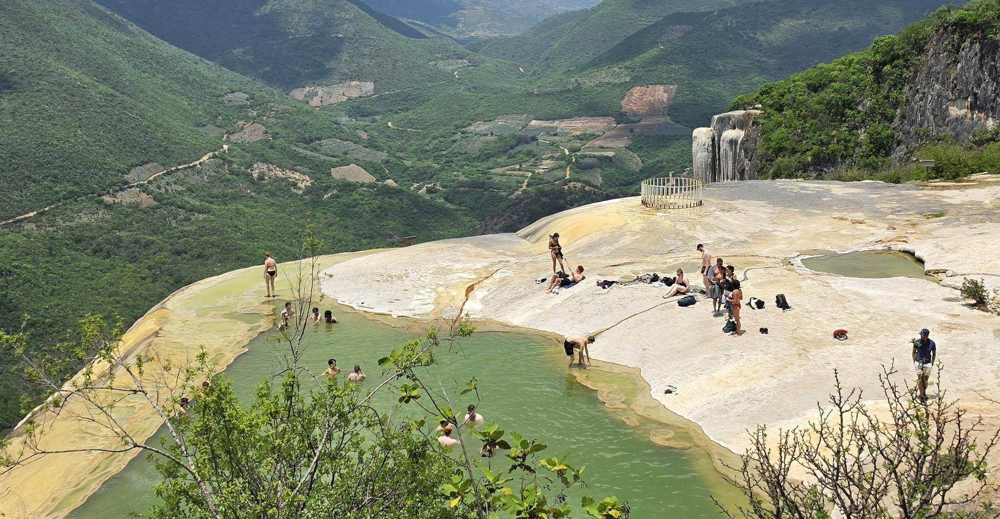

<meta charset="utf-8">
<title>나의 투자 그리고 행복한 여행</title>
<meta name="google-site-verification" content="w87TbfP01azITcUF1V9ykFkj-lqvdzWHMQ--hlyEm5k" />
<meta name="description" content="코스피·코스닥 장중 지수와 주요 종목 시황, 유가·날씨, 실시간 이슈를 매일 자동으로 갱신하고, 실제 써본 여행용품 리뷰와 영화 기록을 함께 모아둔 개인 아카이브.">
<meta name="viewport" content="width=device-width, initial-scale=1">
<link rel="canonical" href="https://danielmoon82.github.io/moon/">
<meta property="og:type" content="website">
<meta property="og:title" content="나의 투자 그리고 행복한 여행">
<meta property="og:description" content="코스피·코스닥 장중 지수와 매일의 시황을 한자리에 모아둔 개인 아카이브.">
<meta property="og:url" content="https://danielmoon82.github.io/moon/">
<meta name="twitter:card" content="summary">
<meta name="twitter:title" content="나의 투자 그리고 행복한 여행">
<meta name="twitter:description" content="코스피·코스닥 장중 지수와 매일의 시황을 한자리에 모아둔 개인 아카이브.">
<link rel="preconnect" href="https://fonts.googleapis.com">
<link rel="preconnect" href="https://fonts.gstatic.com" crossorigin>
<link rel="stylesheet" href="https://fonts.googleapis.com/css2?family=Hahmlet:wght@400;600;800&family=IBM+Plex+Mono:wght@400;500&family=IBM+Plex+Sans+KR:wght@300;400;500;600&display=swap">

<style>
  :root{
    --paper:#E7EBF1;
    --surface:#F4F6FA;
    --surface-2:#DCE2EC;
    --ink:#0F1729;
    --ink-2:#3D4A63;
    --ink-3:#6B7891;
    --line:#C6CEDB;
    --line-soft:#D6DCE6;
    --accent:#B06A15;
    --accent-bright:#C2761A;
    --accent-soft:rgba(176,106,21,.11);
    --jade:#2F6F62;
    --up:#E5484D;
    --down:#3B82F6;
    --grid-dot:rgba(15,23,41,.13);
    --shadow:0 1px 2px rgba(15,23,41,.05), 0 12px 28px -18px rgba(15,23,41,.35);

    --f-display:"Hahmlet",'Nanum Myeongjo',"Apple SD Gothic Neo",serif;
    --f-body:"IBM Plex Sans KR","Apple SD Gothic Neo","Malgun Gothic",sans-serif;
    --f-mono:"IBM Plex Mono","SFMono-Regular",Consolas,monospace;

    --measure:64ch;
    --pad:clamp(20px,5vw,64px);
  }
  @media (prefers-color-scheme:dark){
    :root:not([data-theme="light"]){
      --paper:#0B1120;
      --surface:#121A2C;
      --surface-2:#1A2439;
      --ink:#E9EEF7;
      --ink-2:#A9B5C9;
      --ink-3:#72809A;
      --line:#26314A;
      --line-soft:#1D2739;
      --accent:#E8A33D;
      --accent-bright:#F0B45C;
      --accent-soft:rgba(232,163,61,.13);
      --jade:#5FB39F;
      --grid-dot:rgba(233,238,247,.11);
      --shadow:0 1px 2px rgba(0,0,0,.4), 0 18px 40px -24px rgba(0,0,0,.8);
    }
  }
  :root[data-theme="dark"]{
    --paper:#0B1120;
    --surface:#121A2C;
    --surface-2:#1A2439;
    --ink:#E9EEF7;
    --ink-2:#A9B5C9;
    --ink-3:#72809A;
    --line:#26314A;
    --line-soft:#1D2739;
    --accent:#E8A33D;
    --accent-bright:#F0B45C;
    --accent-soft:rgba(232,163,61,.13);
    --jade:#5FB39F;
    --grid-dot:rgba(233,238,247,.11);
    --shadow:0 1px 2px rgba(0,0,0,.4), 0 18px 40px -24px rgba(0,0,0,.8);
  }

  *{box-sizing:border-box;}
  body{
    margin:0;
    background:var(--paper);
    color:var(--ink);
    font-family:var(--f-body);
    font-weight:300;
    font-size:16px;
    line-height:1.75;
    -webkit-font-smoothing:antialiased;
  }
  a{color:inherit;}
  :focus-visible{outline:2px solid var(--accent-bright);outline-offset:3px;border-radius:2px;}

  .wrap{max-width:1120px;margin:0 auto;padding-inline:var(--pad);}

  .mono{font-family:var(--f-mono);font-variant-numeric:tabular-nums;}
  .eyebrow{
    font-family:var(--f-mono);
    font-size:.7rem;
    letter-spacing:.16em;
    text-transform:uppercase;
    color:var(--ink-3);
    margin:0;
  }

  /* ---------- nav ---------- */
  .nav{
    position:sticky;top:0;z-index:20;
    background:var(--paper);
    background:color-mix(in srgb, var(--paper) 88%, transparent);
    backdrop-filter:blur(10px);
    border-bottom:1px solid var(--line);
  }
  .nav-in{
    display:flex;align-items:center;gap:24px;
    height:56px;
  }
  .brand{
    font-family:var(--f-display);
    font-weight:800;
    font-size:1rem;
    letter-spacing:-.01em;
    margin-right:auto;
    text-decoration:none;
    display:flex;align-items:baseline;gap:9px;
  }
  .nav-links{display:flex;gap:20px;}
  .nav-links a{
    font-family:var(--f-mono);
    font-size:.72rem;
    letter-spacing:.08em;
    color:var(--ink-3);
    text-decoration:none;
    padding:4px 0;
    white-space:nowrap;
    border-bottom:1px solid transparent;
    transition:color .18s, border-color .18s;
  }
  .nav-links a:hover{color:var(--ink);border-bottom-color:var(--accent);}
  /* 링크가 여덟 개라 한 줄에 브랜드와 나란히 두면 좁은 화면에서 글자가 세로로 짜부라진다.
     그래서 일정 폭 아래로는 브랜드 아래에 가로 스크롤 되는 링크 줄을 따로 둔다. */
  @media (max-width:1000px){
    .nav-in{flex-direction:column;align-items:stretch;gap:0;height:auto;}
    .brand{margin-right:0;padding-top:13px;white-space:nowrap;}
    .nav-links{
      gap:18px;
      overflow-x:auto;
      overscroll-behavior-x:contain;
      scrollbar-width:none;
      -ms-overflow-style:none;
      padding-block:9px 11px;
      margin-inline:calc(var(--pad) * -1);
      padding-inline:var(--pad);
      /* 오른쪽 끝을 흐리게 잘라 더 스크롤된다는 걸 알린다. */
      -webkit-mask-image:linear-gradient(90deg,#000 0,#000 calc(100% - 34px),transparent 100%);
      mask-image:linear-gradient(90deg,#000 0,#000 calc(100% - 34px),transparent 100%);
    }
    .nav-links::-webkit-scrollbar{display:none;}
  }
  @media (max-width:520px){ .brand{font-size:.92rem;} }

  /* ---------- hero ---------- */
  .hero{
    position:relative;
    border-bottom:1px solid var(--line);
    overflow:hidden;
    isolation:isolate;
    /* 사진이 뜨기 전에도 글자가 읽히도록 바탕은 사진의 어두운 쪽 톤으로 깔아둔다. */
    background:#1C1408;
  }
  .hero-photo{
    position:absolute;inset:0;width:100%;height:100%;
    object-fit:cover;object-position:52% 58%;
    display:block;
  }
  /* 사진 위 글자를 위한 그늘. 왼쪽(제목 자리)은 짙게, 해가 있는 오른쪽은 거의 손대지 않는다. */
  .hero-scrim{
    position:absolute;inset:0;
    background:
      linear-gradient(92deg,
        rgba(30,15,4,.88) 0%, rgba(30,15,4,.80) 16%, rgba(30,15,4,.62) 30%,
        rgba(30,15,4,.40) 44%, rgba(30,15,4,.20) 58%, rgba(30,15,4,.06) 72%, rgba(30,15,4,0) 88%),
      linear-gradient(0deg, rgba(24,12,3,.52) 0%, rgba(24,12,3,0) 30%),
      linear-gradient(180deg, rgba(24,12,3,.14) 0%, rgba(24,12,3,0) 9%);
    pointer-events:none;
  }
  /* 좁은 화면에서는 글자가 폭 전체를 쓰므로 왼쪽만 덮는 그늘로는 오른쪽 끝이 읽히지 않는다.
     사진 위 세로 방향 그늘로 바꾸고, 사진이 살아 있도록 아래쪽은 덜 덮는다. */
  @media (max-width:700px){
    .hero-photo{object-position:52% 50%;}
    .hero-scrim{
      background:
        linear-gradient(180deg,
          rgba(24,12,3,.76) 0%, rgba(24,12,3,.72) 26%, rgba(24,12,3,.62) 52%,
          rgba(24,12,3,.40) 72%, rgba(24,12,3,.30) 86%, rgba(24,12,3,.46) 100%);
    }
  }

  .hero-in{
    position:relative;
    padding-block:clamp(72px,13vw,150px) clamp(56px,10vw,110px);
  }
  .hero .eyebrow{color:rgba(255,232,196,.82);text-shadow:0 1px 10px rgba(18,10,2,.6);}
  .hero h1{
    font-family:var(--f-display);
    font-weight:800;
    font-size:clamp(2.4rem,7.2vw,4.6rem);
    line-height:1.06;
    letter-spacing:-.035em;
    text-wrap:balance;
    margin:18px 0 0;
    max-width:15ch;
    color:#FFF6E7;
    text-shadow:0 2px 30px rgba(18,10,2,.62), 0 1px 2px rgba(18,10,2,.4);
  }
  .hero h1 em{
    font-style:normal;
    color:#FFC170;
  }
  .hero-lede{
    margin:22px 0 0;
    max-width:44ch;
    font-size:1.03rem;
    color:rgba(252,242,228,.92);
    text-shadow:0 1px 14px rgba(18,10,2,.55);
  }
  .hero-meta{
    display:flex;flex-wrap:wrap;gap:8px 14px;
    margin-top:30px;
  }
  .chip{
    font-family:var(--f-mono);
    font-size:.7rem;letter-spacing:.08em;
    padding:5px 11px;
    border:1px solid rgba(247,238,224,.32);
    border-radius:999px;
    color:rgba(247,238,224,.9);
    background:rgba(20,16,26,.34);
    backdrop-filter:blur(2px);
  }
  .chip b{color:#F0A34B;font-weight:500;}

  /* ---------- 전면 사진 띠 ---------- */
  .band-photo{
    margin:0;
    position:relative;
    height:clamp(200px,30vw,400px);
    overflow:hidden;
    border-block:1px solid var(--line);
    background:var(--surface-2);
  }
  .band-photo img{
    width:100%;height:100%;
    object-fit:cover;object-position:50% 52%;
    display:block;
  }

  /* ---------- section frame ---------- */
  .section{padding-block:clamp(60px,9vw,104px);}
  .section-head{
    display:flex;align-items:baseline;justify-content:space-between;
    gap:20px;flex-wrap:wrap;
    padding-bottom:16px;
    border-bottom:1px solid var(--line);
    margin-bottom:clamp(32px,5vw,52px);
  }
  .section-head h2{
    font-family:var(--f-display);
    font-weight:600;
    font-size:clamp(1.5rem,3.4vw,2.05rem);
    letter-spacing:-.03em;
    margin:0;
  }
  .section-head p{margin:0;font-size:.9rem;color:var(--ink-3);max-width:38ch;}

  /* ---------- gear ---------- */
  .disclosure{
    margin:-8px 0 clamp(24px,3.6vw,36px);
    font-size:.76rem;
    color:var(--ink-3);
    padding:10px 14px;
    background:var(--surface);
    border:1px solid var(--line-soft);
    border-radius:3px;
  }
  .gear-grid{
    display:grid;
    grid-template-columns:repeat(auto-fit,minmax(240px,1fr));
    gap:clamp(16px,2.4vw,26px);
  }
  .gear-card{
    display:flex;flex-direction:column;gap:10px;
    border:1px solid var(--line);
    border-radius:3px;
    background:var(--surface);
    padding:22px clamp(18px,2.2vw,24px) 24px;
  }
  .gear-cat{
    font-family:var(--f-mono);
    font-size:.66rem;letter-spacing:.16em;text-transform:uppercase;
    color:var(--accent);
  }
  .gear-card h3{
    font-family:var(--f-display);
    font-weight:600;font-size:1.08rem;letter-spacing:-.02em;
    margin:0;
  }
  .gear-note{margin:0;font-size:.88rem;color:var(--ink-2);flex-grow:1;}
  .gear-foot{
    display:flex;align-items:center;justify-content:space-between;
    gap:12px;margin-top:6px;
    padding-top:14px;
    border-top:1px solid var(--line-soft);
  }
  .gear-price{
    font-family:var(--f-mono);
    font-size:.86rem;
    color:var(--ink);
    font-variant-numeric:tabular-nums;
  }
  .gear-cta{
    font-family:var(--f-mono);
    font-size:.72rem;letter-spacing:.04em;
    padding:7px 14px;
    border-radius:999px;
    background:var(--accent);
    color:#F7EFE2;
    text-decoration:none;
    white-space:nowrap;
  }
  .gear-cta:hover{background:var(--accent-bright);}

  /* ---------- trends ---------- */
  .trend-note{
    margin:-8px 0 clamp(24px,3.6vw,36px);
    font-size:.76rem;
    color:var(--ink-3);
    padding:10px 14px;
    background:var(--surface);
    border:1px solid var(--line-soft);
    border-radius:3px;
  }
  .trend-live{
    display:inline-flex;align-items:center;gap:6px;
    font-family:var(--f-mono);
    font-size:.66rem;letter-spacing:.1em;
    color:var(--jade);
  }
  .trend-live::before{
    content:"";
    width:6px;height:6px;border-radius:50%;
    background:var(--jade);
    box-shadow:0 0 0 0 color-mix(in srgb, var(--jade) 60%, transparent);
    animation:trend-pulse 1.8s ease-out infinite;
  }
  @keyframes trend-pulse{
    0%{box-shadow:0 0 0 0 color-mix(in srgb, var(--jade) 55%, transparent);}
    70%{box-shadow:0 0 0 7px color-mix(in srgb, var(--jade) 0%, transparent);}
    100%{box-shadow:0 0 0 0 color-mix(in srgb, var(--jade) 0%, transparent);}
  }
  .trend-grid{
    display:grid;
    grid-template-columns:repeat(auto-fit,minmax(220px,1fr));
    gap:clamp(14px,2vw,20px);
  }
  .trend-card{
    --brand:var(--accent);
    position:relative;
    display:flex;flex-direction:column;gap:8px;
    border:1px solid var(--line);
    border-top:3px solid var(--brand);
    border-radius:3px;
    background:linear-gradient(180deg, color-mix(in srgb, var(--brand) 7%, var(--surface)) 0%, var(--surface) 60%);
    padding:20px clamp(16px,2vw,22px) 22px;
    text-decoration:none;
    transition:border-color .15s ease, transform .15s ease, box-shadow .15s ease;
  }
  .trend-card:hover{
    transform:translateY(-3px);
    box-shadow:0 10px 24px -14px color-mix(in srgb, var(--brand) 55%, transparent);
    border-color:var(--brand);
    border-top-color:var(--brand);
  }
  .trend-cat{
    font-family:var(--f-mono);
    font-size:.66rem;letter-spacing:.16em;text-transform:uppercase;
    color:var(--brand);
    font-weight:600;
  }
  .trend-card h3{
    font-family:var(--f-display);
    font-weight:600;font-size:1.05rem;letter-spacing:-.02em;
    margin:0;color:var(--ink);
  }
  .trend-card p{margin:0;font-size:.84rem;color:var(--ink-2);}
  .trend-go{
    margin-top:4px;
    font-family:var(--f-mono);
    font-size:.7rem;letter-spacing:.06em;
    color:var(--brand);
    font-weight:500;
  }
  .trend-card.disabled{
    --brand:var(--ink-3);
    opacity:.55;
    background:var(--surface);
  }
  .trend-card.disabled:hover{transform:none;box-shadow:none;border-color:var(--line);}

  /* ---------- reviews ---------- */
  .review-grid{
    display:grid;
    grid-template-columns:repeat(auto-fit,minmax(280px,1fr));
    gap:clamp(16px,2.4vw,26px);
  }
  .review-card{
    display:flex;flex-direction:column;
    border:1px solid var(--line);
    border-radius:3px;
    background:var(--surface);
    text-decoration:none;
    overflow:hidden;
    transition:border-color .15s ease, transform .15s ease, box-shadow .15s ease;
  }
  .review-card:hover{
    transform:translateY(-3px);
    border-color:var(--accent);
    box-shadow:0 10px 24px -14px color-mix(in srgb, var(--accent) 55%, transparent);
  }
  .review-thumb{
    width:100%;aspect-ratio:16/10;object-fit:cover;object-position:center 22%;
    display:block;background:var(--surface-2);
    border-bottom:1px solid var(--line-soft);
  }
  .review-body{display:flex;flex-direction:column;gap:8px;padding:20px clamp(16px,2vw,22px) 22px;}
  .review-cat{
    font-family:var(--f-mono);
    font-size:.66rem;letter-spacing:.16em;text-transform:uppercase;
    color:var(--accent);font-weight:600;
  }
  .review-card h3{
    font-family:var(--f-display);
    font-weight:600;font-size:1.05rem;letter-spacing:-.02em;
    margin:0;color:var(--ink);
  }
  .review-card p{margin:0;font-size:.86rem;color:var(--ink-2);}
  .review-go{
    margin-top:6px;
    font-family:var(--f-mono);
    font-size:.7rem;letter-spacing:.06em;
    color:var(--accent);font-weight:500;
  }

  /* ---------- 장중 지수 ---------- */
  .idx-grid{
    display:grid;
    grid-template-columns:repeat(auto-fit,minmax(300px,1fr));
    gap:clamp(14px,2vw,20px);
    margin-bottom:clamp(20px,3vw,30px);
  }
  .idx-card{
    display:flex;flex-direction:column;gap:12px;
    border:1px solid var(--line);
    border-radius:3px;
    background:var(--surface);
    padding:20px clamp(16px,2vw,22px) 18px;
  }
  .idx-head{display:flex;align-items:baseline;justify-content:space-between;gap:10px;}
  .idx-name{
    font-family:var(--f-display);
    font-weight:600;font-size:1.05rem;letter-spacing:-.02em;
    color:var(--ink);margin:0;
  }
  .idx-code{font-family:var(--f-mono);font-size:.7rem;color:var(--ink-3);}
  .idx-price-row{display:flex;align-items:baseline;gap:10px;flex-wrap:wrap;}
  .idx-value{
    font-family:var(--f-mono);font-size:1.6rem;font-weight:600;
    color:var(--ink);font-variant-numeric:tabular-nums;line-height:1;
  }
  /* 등락은 색만으로 구분하지 않는다. 화살표와 부호가 함께 붙는다. */
  .idx-change{font-family:var(--f-mono);font-size:.84rem;font-weight:600;font-variant-numeric:tabular-nums;color:var(--ink-3);}
  .idx-change.up{color:var(--up);}
  .idx-change.down{color:var(--down);}
  .idx-chart-wrap{position:relative;}
  .idx-chart{display:block;width:100%;height:auto;touch-action:pan-y;}
  .idx-empty{
    display:flex;align-items:center;justify-content:center;
    aspect-ratio:3/1;
    border:1px dashed var(--line);border-radius:2px;
    font-family:var(--f-mono);font-size:.72rem;color:var(--ink-3);
    text-align:center;padding:0 12px;
  }
  .idx-tip{
    position:absolute;top:0;
    transform:translate(-50%,-4px);
    pointer-events:none;
    white-space:nowrap;
    font-family:var(--f-mono);font-size:.68rem;
    background:var(--ink);color:var(--paper);
    padding:3px 7px;border-radius:2px;
    font-variant-numeric:tabular-nums;
  }
  .idx-foot{
    display:flex;justify-content:space-between;gap:12px;flex-wrap:wrap;
    font-family:var(--f-mono);font-size:.68rem;color:var(--ink-3);
    font-variant-numeric:tabular-nums;
  }

  /* ---------- stocks ---------- */
  .stock-note{margin:0 0 22px;font-size:.82rem;color:var(--ink-3);}
  .stock-grid{
    display:grid;
    grid-template-columns:repeat(auto-fit,minmax(260px,1fr));
    gap:clamp(14px,2vw,20px);
  }
  .stock-card{
    display:flex;flex-direction:column;gap:10px;
    border:1px solid var(--line);
    border-radius:3px;
    background:var(--surface);
    padding:20px clamp(16px,2vw,22px) 22px;
  }
  .stock-head{display:flex;align-items:baseline;justify-content:space-between;gap:10px;}
  .stock-name{
    font-family:var(--f-display);
    font-weight:600;font-size:1.05rem;letter-spacing:-.02em;
    color:var(--ink);margin:0;
  }
  .stock-code{font-family:var(--f-mono);font-size:.7rem;color:var(--ink-3);}
  .stock-chart{
    width:100%;height:auto;aspect-ratio:2.3/1;
    border-radius:2px;background:var(--surface-2);
    display:block;object-fit:contain;
  }
  .stock-chart.is-empty{visibility:hidden;}
  .stock-price-row{display:flex;align-items:baseline;gap:10px;flex-wrap:wrap;}
  .stock-price{
    font-family:var(--f-mono);font-size:1.3rem;font-weight:600;
    color:var(--ink);font-variant-numeric:tabular-nums;
  }
  .stock-change{font-family:var(--f-mono);font-size:.82rem;font-weight:600;font-variant-numeric:tabular-nums;}
  .stock-change.up{color:var(--up);}
  .stock-change.down{color:var(--down);}
  .stock-metrics{
    display:grid;grid-template-columns:1fr 1fr;gap:10px 14px;
    margin-top:4px;padding-top:12px;
    border-top:1px solid var(--line-soft);
  }
  .stock-metric{display:flex;flex-direction:column;gap:2px;}
  .stock-metric .label{
    font-family:var(--f-mono);font-size:.64rem;letter-spacing:.08em;text-transform:uppercase;
    color:var(--ink-3);
  }
  .stock-metric .value{
    font-family:var(--f-mono);font-size:.84rem;color:var(--ink-2);
    font-variant-numeric:tabular-nums;
  }
  .stock-metric .value.up{color:var(--up);}
  .stock-metric .value.down{color:var(--down);}
  .stock-asof{margin:2px 0 0;font-family:var(--f-mono);font-size:.68rem;color:var(--ink-3);}
  .stock-report{margin:-8px 0 22px;}
  .stock-report a{
    font-family:var(--f-mono);font-size:.76rem;letter-spacing:.04em;
    color:var(--accent);font-weight:500;text-decoration:none;
    border-bottom:1px solid color-mix(in srgb, var(--accent) 45%, transparent);
    padding-bottom:2px;
  }
  .stock-report a:hover{border-bottom-color:var(--accent);}

  /* ---------- oil & weather ---------- */
  /* 색은 사이트 테마 토큰에 물려두어 라이트/다크 모두에서 같이 바뀐다. */
  .nfx{
    --nfx-bg:var(--paper);
    --nfx-panel:var(--surface);
    --nfx-line:var(--line);
    --nfx-text:var(--ink);
    --nfx-muted:var(--ink-3);
    --nfx-wti:var(--accent);
    --nfx-brent:var(--jade);
    --nfx-up:var(--up);
    --nfx-down:var(--down);
  }
  .nfx-note{margin:.9rem 0 0;color:var(--nfx-muted);font-size:.78rem;}
  .nfx-card{
    background:var(--nfx-panel);
    border:1px solid var(--nfx-line);
    border-radius:3px;
    padding:1.35rem 1.35rem 1.15rem;
  }
  .nfx-card + .nfx-card{margin-top:1.25rem;}

  .nfx-head{
    display:flex;flex-wrap:wrap;gap:.75rem 1.25rem;
    align-items:baseline;justify-content:space-between;
    margin-bottom:1.1rem;
  }
  .nfx-stats{display:flex;flex-wrap:wrap;gap:1.75rem;}
  .nfx-stat-label{
    display:flex;align-items:center;gap:.4rem;
    font-family:var(--f-mono);font-size:.64rem;letter-spacing:.08em;text-transform:uppercase;
    color:var(--nfx-muted);margin-bottom:.3rem;
  }
  .nfx-swatch{width:.55rem;height:.55rem;border-radius:50%;flex:none;}
  .nfx-price{
    font-family:var(--f-mono);font-size:1.3rem;font-weight:600;letter-spacing:-.02em;
    color:var(--nfx-text);font-variant-numeric:tabular-nums;
  }
  .nfx-price small{font-size:.68rem;font-weight:400;color:var(--nfx-muted);margin-left:.35rem;}
  .nfx-delta{font-family:var(--f-mono);font-size:.8rem;font-variant-numeric:tabular-nums;margin-top:.2rem;}
  .nfx-delta.up{color:var(--nfx-up);}
  .nfx-delta.down{color:var(--nfx-down);}
  .nfx-delta.flat{color:var(--nfx-muted);}

  .nfx-ranges{display:flex;gap:.3rem;}
  .nfx-ranges button{
    font:inherit;font-family:var(--f-mono);font-size:.72rem;
    padding:.3rem .7rem;border-radius:999px;
    border:1px solid var(--nfx-line);
    background:transparent;color:var(--nfx-muted);
    cursor:pointer;
  }
  .nfx-ranges button[aria-pressed="true"]{
    background:var(--nfx-text);border-color:var(--nfx-text);color:var(--nfx-bg);
  }
  .nfx-ranges button:focus-visible,
  .nfx input:focus-visible,.nfx button:focus-visible{
    outline:2px solid var(--nfx-wti);outline-offset:2px;
  }

  .nfx-chart{position:relative;}
  .nfx-chart svg{display:block;width:100%;height:auto;touch-action:pan-y;}
  .nfx-readout{
    min-height:1.2rem;margin-bottom:.5rem;
    font-family:var(--f-mono);font-size:.76rem;color:var(--nfx-muted);
    font-variant-numeric:tabular-nums;
  }
  .nfx-readout b{color:var(--nfx-text);font-weight:600;}
  .nfx-empty{padding:2.5rem 1rem;text-align:center;color:var(--nfx-muted);font-size:.88rem;}

  .nfx-search{display:flex;gap:.5rem;margin-bottom:.9rem;}
  .nfx-search input{
    flex:1;min-width:0;font:inherit;font-size:.92rem;
    padding:.6rem .8rem;border-radius:3px;
    border:1px solid var(--nfx-line);
    background:var(--nfx-bg);color:var(--nfx-text);
  }
  .nfx-search input::placeholder{color:var(--nfx-muted);}
  .nfx-search button{
    font:inherit;font-size:.88rem;padding:.6rem 1.05rem;
    border-radius:3px;border:1px solid var(--nfx-text);
    background:var(--nfx-text);color:var(--nfx-bg);
    font-weight:600;cursor:pointer;flex:none;
  }
  .nfx-chips{display:flex;flex-wrap:wrap;gap:.4rem;margin-bottom:1.1rem;}
  .nfx-chips button{
    font:inherit;font-size:.78rem;padding:.3rem .7rem;
    border-radius:999px;border:1px solid var(--nfx-line);
    background:transparent;color:var(--nfx-muted);cursor:pointer;
  }
  .nfx-chips button[aria-pressed="true"]{color:var(--nfx-text);border-color:var(--nfx-muted);}

  .nfx-results{list-style:none;margin:0 0 1rem;padding:0;}
  .nfx-results li + li{border-top:1px solid var(--nfx-line);}
  .nfx-results button{
    width:100%;text-align:left;font:inherit;font-size:.88rem;
    padding:.6rem .2rem;background:none;border:0;
    color:var(--nfx-text);cursor:pointer;
  }
  .nfx-results span{color:var(--nfx-muted);font-size:.8rem;margin-left:.45rem;}

  .nfx-now{display:flex;align-items:center;gap:1.1rem;flex-wrap:wrap;}
  .nfx-glyph{font-size:2.4rem;line-height:1;color:var(--nfx-brent);}
  .nfx-now-temp{
    font-family:var(--f-mono);font-size:2rem;font-weight:600;letter-spacing:-.02em;
    color:var(--nfx-text);font-variant-numeric:tabular-nums;
  }
  .nfx-now-city{font-size:.95rem;font-weight:600;color:var(--nfx-text);}
  .nfx-now-meta{font-size:.8rem;color:var(--nfx-muted);}

  .nfx-days{
    display:grid;grid-template-columns:repeat(7,minmax(0,1fr));
    gap:.4rem;margin-top:1.25rem;
    padding-top:1.1rem;border-top:1px solid var(--nfx-line);
  }
  .nfx-day{text-align:center;font-size:.76rem;}
  .nfx-day-name{color:var(--nfx-muted);margin-bottom:.3rem;}
  .nfx-day .nfx-glyph{font-size:1.15rem;margin-bottom:.3rem;}
  .nfx-day-hi{font-family:var(--f-mono);font-variant-numeric:tabular-nums;font-weight:600;color:var(--nfx-text);}
  .nfx-day-lo{font-family:var(--f-mono);font-variant-numeric:tabular-nums;color:var(--nfx-muted);}

  .nfx-head-sub{margin-top:clamp(36px,5vw,56px);}

  @media (max-width:640px){
    .nfx-stats{gap:1.25rem;}
    .nfx-days{grid-template-columns:repeat(4,minmax(0,1fr));row-gap:1rem;}
  }
  @media (prefers-reduced-motion:no-preference){
    .nfx-ranges button,.nfx-chips button{transition:background-color .15s, color .15s;}
  }

  /* ---------- footer ---------- */
  .foot{
    border-top:1px solid var(--line);
    background:var(--surface);
    padding-block:36px 44px;
  }
  .foot-in{
    display:flex;justify-content:space-between;align-items:flex-end;
    gap:24px;flex-wrap:wrap;
  }
  .foot p{margin:0;font-size:.82rem;color:var(--ink-3);}
  .foot .sig{
    font-family:var(--f-display);
    font-weight:600;font-size:1.05rem;color:var(--ink);
    letter-spacing:-.02em;
  }

  /* ---------- motion ---------- */
  .rise{opacity:1;transform:none;}
  html.js-reveal .rise{opacity:0;transform:translateY(14px);transition:opacity .6s ease, transform .6s cubic-bezier(.22,.7,.3,1);}
  html.js-reveal .rise.in{opacity:1;transform:none;}
  @media (prefers-reduced-motion:reduce){
    html.js-reveal .rise{opacity:1;transform:none;transition:none;}
    *{animation-duration:.001ms !important;transition-duration:.001ms !important;}
  }
</style>

<nav class="nav">
  <div class="wrap nav-in">
    <a class="brand" href="#top">나의 투자 그리고 행복한 여행</a>
    <div class="nav-links">
      <a href="#gear">여행용품</a>
      <a href="#reviews">영화·리뷰</a>
      <a href="#stocks">주식 시황</a>
      <a href="#oil-weather">유가·날씨</a>
      <a href="#trends">실시간 이슈</a>
    </div>
  </div>
</nav>

<header class="hero" id="top">
  <picture>
    <source media="(max-width:700px)" srcset="./assets/hero-sunset-tall.jpg" width="1000" height="1219">
    
  </picture>
  <div class="hero-scrim" aria-hidden="true"></div>
  <div class="wrap hero-in">
    <p class="eyebrow">Investing &amp; Travel journal · ICN base</p>
    <h1>나의 투자 그리고<br><em>행복한 여행</em></h1>
    <p class="hero-lede">장이 열리면 시황을 적고, 장이 닫히면 다음 여행을 고릅니다. 숫자와 풍경을 굳이 나누지 않고 같은 자리에 쌓아둔 개인 기록입니다.</p>
    <div class="hero-meta">
      <span class="chip">코스피·코스닥 <b>장중</b></span>
      <span class="chip">시황 <b>매일</b> 갱신</span>
      <span class="chip">여행용품 <b>리뷰</b></span>
    </div>
  </div>
</header>

<main>
  <section class="section wrap" id="gear">
    <div class="section-head">
      <h2>여행용품 리뷰</h2>
      <p>여행짐을 싸고 풀면서 필요한 것을 골랐습니다.</p>
    </div>
    <p class="disclosure">이 페이지의 일부 링크는 쿠팡 파트너스 활동의 일환으로, 이를 통해 발생한 수익의 일정액을 제공받을 수 있습니다. 가격은 확인 시점 기준 참고용이며 실제 판매가는 방문 시점에 따라 달라질 수 있습니다.</p>

    <div class="gear-grid">
      <!-- 아래 6장은 자리표시자입니다. 실제 사용 중인 제품명 · 가격 · 쿠팡파트너스(또는 다른 제휴) 링크로 교체하세요. -->
      <article class="gear-card rise">
        <span class="gear-cat">Carry-on</span>
        <h3>20인치 기내용 캐리어 (샘소나이트 등)</h3>
        <p class="gear-note">14일 이하는 이거 하나. 리스본부터 삿포로까지 위탁 없이 다녔다. 바퀴 소음이 적어서 새벽 체크인에도 눈치가 덜 보였다.</p>
        <div class="gear-foot">
          <span class="gear-price mono">약 ₩200,000대~</span>
          <a class="gear-cta" href="https://link.coupang.com/a/gAx5egxhim" target="_blank" rel="nofollow sponsored noopener">쿠팡에서 보기</a>
        </div>
      </article>

      <article class="gear-card rise">
        <span class="gear-cat">Night flight</span>
        <h3>라이프잇 파우치형 메모리폼 목베개</h3>
        <p class="gear-note">CUZ 구간 30시간 15분 중 절반은 이것 덕에 잤다. 접으면 손바닥만 해져서 캐리어 옆주머니에 넣고 다닌다.</p>
        <div class="gear-foot">
          <span class="gear-price mono">약 ₩19,800~</span>
          <a class="gear-cta" href="https://link.coupang.com/a/gAycFdGwp2" target="_blank" rel="nofollow sponsored noopener">쿠팡에서 보기</a>
        </div>
      </article>

      <article class="gear-card rise">
        <span class="gear-cat">Night flight</span>
        <h3>노이즈캔슬링 무선이어폰 (2만원대 라인업)</h3>
        <p class="gear-note">엔진 소음이 사라지는 순간 옆자리 대화도 같이 사라진다. 장거리 야간편에서 가장 회수율이 높았던 물건.</p>
        <div class="gear-foot">
          <span class="gear-price mono">약 ₩20,000~50,000대</span>
          <a class="gear-cta" href="https://link.coupang.com/a/gAyrK1FuRU" target="_blank" rel="nofollow sponsored noopener">쿠팡에서 보기</a>
        </div>
      </article>

      <article class="gear-card rise">
        <span class="gear-cat">Packing</span>
        <h3>여행용 압축 파우치 세트</h3>
        <p class="gear-note">트빌리시행 13일 짐이 이걸로 반 넘게 줄었다. 세탁 전후로 나눠 넣으면 숙소에서 짐 뒤질 일이 없다.</p>
        <div class="gear-foot">
          <span class="gear-price mono">약 ₩15,000~30,000대</span>
          <a class="gear-cta" href="https://link.coupang.com/a/gAyvvBtTgG" target="_blank" rel="nofollow sponsored noopener">쿠팡에서 보기</a>
        </div>
      </article>

      <article class="gear-card rise">
        <span class="gear-cat">Power</span>
        <h3>20000mAh 보조배터리 (100Wh 이하, 기내반입 가능)</h3>
        <p class="gear-note">기내 반입 규정 안에서 최대치로 골랐다. 다낭에서도 쿠스코에서도 카메라와 폰을 동시에 살렸다.</p>
        <div class="gear-foot">
          <span class="gear-price mono">약 ₩32,500~</span>
          <a class="gear-cta" href="https://link.coupang.com/a/gAyxltbhIG" target="_blank" rel="nofollow sponsored noopener">쿠팡에서 보기</a>
        </div>
      </article>

      <article class="gear-card rise">
        <span class="gear-cat">Adapter</span>
        <h3>해외여행용 멀티 트래블 어댑터</h3>
        <p class="gear-note">포르투갈, 아이슬란드, 일본, 조지아, 베트남, 페루 — 플러그 모양이 다 다른데 이거 하나로 여섯 번 다 해결됐다.</p>
        <div class="gear-foot">
          <span class="gear-price mono">약 ₩15,000~40,000대</span>
          <a class="gear-cta" href="https://link.coupang.com/a/gAyDu31F92" target="_blank" rel="nofollow sponsored noopener">쿠팡에서 보기</a>
        </div>
      </article>
    </div>
  </section>

  <figure class="band-photo">
    
  </figure>

  <section class="section wrap" id="reviews">
    <div class="section-head">
      <h2>영화·리뷰</h2>
      <p>극장에서 보고 온 것들, 보러 가기 전 알아두면 좋았던 것들.</p>
    </div>

    <div class="review-grid">
      <a class="review-card rise" href="./posts/odyssey.html">
        
        <div class="review-body">
          <span class="review-cat">Film</span>
          <h3>영화 오디세이 총정리</h3>
          <p>개봉일·출연진부터 아이맥스 70mm 관람 포인트까지. 2시간 52분을 예매하기 전에 알아둘 것들.</p>
          <span class="review-go">읽어보기 →</span>
        </div>
      </a>
    </div>
  </section>

  <section class="section wrap" id="trends">
    <div class="section-head">
      <h2>실시간 이슈</h2>
      <p>포털별 실시간 트렌드를 한 화면에서 바로 넘어가 볼 수 있게 모았습니다.</p>
    </div>
    <p class="trend-note"><span class="trend-live">LIVE</span> — 각 카드는 해당 포털의 실시간 페이지로 바로 연결돼요. 순위를 이 페이지 안에 그대로 옮겨오지 않는 건, 포털들이 실시간 데이터를 외부에 심을 수 있는 공식 방법을 제공하지 않아서예요 — 그래서 클릭해서 보는 게 가장 정확합니다.</p>

    <div class="trend-grid">
      <a class="trend-card rise" style="--brand:#1968E8" href="https://www.daum.net/" target="_blank" rel="noopener">
        <span class="trend-cat">Daum</span>
        <h3>다음 실시간 트렌드</h3>
        <p>2026년 3월, 6년 만에 부활한 실검. 메인 검색창 옆에 1~10위가 뜬다.</p>
        <span class="trend-go">daum.net →</span>
      </a>

      <a class="trend-card rise" style="--brand:#FF5A36" href="https://www.nate.com/" target="_blank" rel="noopener">
        <span class="trend-cat">Nate</span>
        <h3>네이트 실시간 검색어</h3>
        <p>다음과 검색엔진을 공유해서 순위가 사실상 같이 움직인다.</p>
        <span class="trend-go">nate.com →</span>
      </a>

      <a class="trend-card rise" style="--brand:#2FAE4E" href="https://zum.com/" target="_blank" rel="noopener">
        <span class="trend-cat">Zum</span>
        <h3>줌 AI 이슈 트렌드</h3>
        <p>뉴스·커뮤니티를 함께 분석해 지금 뜨는 이슈를 보여준다.</p>
        <span class="trend-go">zum.com →</span>
      </a>

      <a class="trend-card rise" style="--brand:#6C5CE7" href="https://gall.dcinside.com/board/lists/?id=dcbest" target="_blank" rel="noopener">
        <span class="trend-cat">DCinside</span>
        <h3>디시인사이드 실시간 베스트</h3>
        <p>전체 갤러리에서 지금 가장 반응이 뜨거운 글들을 모아 보여준다.</p>
        <span class="trend-go">dcinside.com →</span>
      </a>

      <a class="trend-card rise" style="--brand:#4285F4" href="https://trends.google.com/trending?geo=KR" target="_blank" rel="noopener">
        <span class="trend-cat">Google</span>
        <h3>구글 트렌드 (대한민국)</h3>
        <p id="google-trend-list">대한민국 기준 인기 급상승 검색어를 볼 수 있다.</p>
        <span class="trend-go" id="google-trend-time">trends.google.com →</span>
      </a>

      <div class="trend-card disabled rise">
        <span class="trend-cat">Naver</span>
        <h3>네이버 실시간 검색어</h3>
        <p>2021년 2월 서비스가 폐지됐고, 네이버는 재도입 계획이 없다고 밝혔다. 그래서 링크를 걸지 않았다.</p>
      </div>
    </div>
  </section>

  <section class="section wrap" id="stocks">
    <div class="section-head">
      <h2>오늘의 시황</h2>
      <p>코스피·코스닥 장중 지수와 삼성전자·SK하이닉스·현대차 3종목의 시세를 자동으로 갱신합니다.</p>
    </div>
    <div class="idx-grid">
      <article class="idx-card" data-index="KOSPI">
        <div class="idx-head">
          <h3 class="idx-name">코스피</h3>
          <span class="idx-code mono">KOSPI</span>
        </div>
        <div class="idx-price-row">
          <span class="idx-value mono" data-field="value">-</span>
          <span class="idx-change mono" data-field="change">-</span>
        </div>
        <div class="idx-chart-wrap">
          <div class="idx-empty">장이 열리면 표시됩니다</div>
        </div>
        <div class="idx-foot">
          <span data-field="range"></span>
          <span data-field="asof">데이터 준비 중</span>
        </div>
      </article>
      <article class="idx-card" data-index="KOSDAQ">
        <div class="idx-head">
          <h3 class="idx-name">코스닥</h3>
          <span class="idx-code mono">KOSDAQ</span>
        </div>
        <div class="idx-price-row">
          <span class="idx-value mono" data-field="value">-</span>
          <span class="idx-change mono" data-field="change">-</span>
        </div>
        <div class="idx-chart-wrap">
          <div class="idx-empty">장이 열리면 표시됩니다</div>
        </div>
        <div class="idx-foot">
          <span data-field="range"></span>
          <span data-field="asof">데이터 준비 중</span>
        </div>
      </article>
    </div>

    <p class="stock-note"><span class="trend-live">LIVE</span> — 코스피·코스닥 지수와 종목 가격·거래량은 장중 15분마다 갱신됩니다. 지수 그래프의 점선은 전일 종가입니다. 외국인·기관 순매수량은 거래 확정 이후에만 집계되어 하루 한 번만 갱신되며, 장중에는 전일 확정치가 표시됩니다. 투자 판단의 참고 자료일 뿐이며 매수·매도를 권유하지 않습니다.</p>
    <p class="stock-report" hidden><a id="latest-report-link" href="#">마감 시황 리포트 읽기 →</a></p>
    <p class="stock-report" hidden><a id="latest-us-report-link" href="#">미국증시 마감 시황 읽기 →</a></p>
    <p class="stock-report"><a href="./posts/us-market-2026-09-04.html">2026-09-04 미국증시 마감 시황 — 고용 서프라이즈에 3대 지수 하락 →</a></p>
    <p class="stock-report"><a href="./posts/samsung-2026-09-04.html">삼성전자 주가 전망 — 사상 최대 실적인데 PER은 6배 →</a></p>
    <p class="stock-report"><a href="./posts/theme-2026-09-04.html">2026-09-04 강세 테마 정리 — 어제 1위 손해보험이 오늘 꼴찌 →</a></p>
    <p class="stock-report"><a href="./posts/sky-2026-09-04.html">스카이랩스 주가 전망 — 상장 첫날 8,200원에서 28,750원 →</a></p>

    <div class="stock-grid">
      <article class="stock-card rise" data-code="005930">
        <div class="stock-head">
          <h3 class="stock-name">삼성전자</h3>
          <span class="stock-code mono">005930</span>
        </div>
        
        <div class="stock-price-row">
          <span class="stock-price mono" data-field="price">-</span>
          <span class="stock-change mono" data-field="change">-</span>
        </div>
        <div class="stock-metrics">
          <div class="stock-metric">
            <span class="label">거래량</span>
            <span class="value mono" data-field="volume">-</span>
          </div>
          <div class="stock-metric">
            <span class="label">외국인 순매수량(당일)</span>
            <span class="value mono" data-field="foreign">-</span>
          </div>
          <div class="stock-metric">
            <span class="label">기관 순매수량(당일)</span>
            <span class="value mono" data-field="institution">-</span>
          </div>
          <div class="stock-metric">
            <span class="label">외국인 20일 누적 순매수량</span>
            <span class="value mono" data-field="foreign-period">-</span>
          </div>
        </div>
        <p class="stock-asof" data-field="asof">데이터 준비 중</p>
      </article>

      <article class="stock-card rise" data-code="000660">
        <div class="stock-head">
          <h3 class="stock-name">SK하이닉스</h3>
          <span class="stock-code mono">000660</span>
        </div>
        
        <div class="stock-price-row">
          <span class="stock-price mono" data-field="price">-</span>
          <span class="stock-change mono" data-field="change">-</span>
        </div>
        <div class="stock-metrics">
          <div class="stock-metric">
            <span class="label">거래량</span>
            <span class="value mono" data-field="volume">-</span>
          </div>
          <div class="stock-metric">
            <span class="label">외국인 순매수량(당일)</span>
            <span class="value mono" data-field="foreign">-</span>
          </div>
          <div class="stock-metric">
            <span class="label">기관 순매수량(당일)</span>
            <span class="value mono" data-field="institution">-</span>
          </div>
          <div class="stock-metric">
            <span class="label">외국인 20일 누적 순매수량</span>
            <span class="value mono" data-field="foreign-period">-</span>
          </div>
        </div>
        <p class="stock-asof" data-field="asof">데이터 준비 중</p>
      </article>

      <article class="stock-card rise" data-code="005380">
        <div class="stock-head">
          <h3 class="stock-name">현대차</h3>
          <span class="stock-code mono">005380</span>
        </div>
        
        <div class="stock-price-row">
          <span class="stock-price mono" data-field="price">-</span>
          <span class="stock-change mono" data-field="change">-</span>
        </div>
        <div class="stock-metrics">
          <div class="stock-metric">
            <span class="label">거래량</span>
            <span class="value mono" data-field="volume">-</span>
          </div>
          <div class="stock-metric">
            <span class="label">외국인 순매수량(당일)</span>
            <span class="value mono" data-field="foreign">-</span>
          </div>
          <div class="stock-metric">
            <span class="label">기관 순매수량(당일)</span>
            <span class="value mono" data-field="institution">-</span>
          </div>
          <div class="stock-metric">
            <span class="label">외국인 20일 누적 순매수량</span>
            <span class="value mono" data-field="foreign-period">-</span>
          </div>
        </div>
        <p class="stock-asof" data-field="asof">데이터 준비 중</p>
      </article>
    </div>
  </section>

  <section class="section wrap nfx" id="oil-weather">
    <div class="section-head">
      <h2>유가</h2>
      <p>WTI·브렌트 종가입니다. 페이지를 열 때마다 최신 값을 받아오므로 따로 갱신할 게 없습니다.</p>
    </div>
    <p class="stock-note"><span class="trend-live">LIVE</span> — 뉴욕 상품시장 기준이라 국내 날짜로는 전날 종가가 표시될 수 있습니다. 5분마다 자동 갱신되며, 투자 판단의 참고 자료일 뿐이며 매수·매도를 권유하지 않습니다.</p>

    <div class="nfx-card rise">
      <div class="nfx-head">
        <div class="nfx-stats" id="nfx-stats"></div>
        <div class="nfx-ranges" id="nfx-ranges" role="group" aria-label="차트 기간">
          <button type="button" data-days="30">1개월</button>
          <button type="button" data-days="90">3개월</button>
          <button type="button" data-days="365" aria-pressed="true">1년</button>
        </div>
      </div>
      <div class="nfx-chart">
        <div class="nfx-readout" id="nfx-readout"></div>
        <div id="nfx-canvas"></div>
      </div>
      <p class="nfx-note" id="nfx-updated"></p>
    </div>

    <div class="section-head nfx-head-sub">
      <h2>세계 날씨</h2>
      <p>도시 이름을 넣으면 전 세계 어디든 찾습니다. 아래 칩은 이 일지에 기록된 도시들입니다.</p>
    </div>

    <div class="nfx-card rise">
      <div class="nfx-search">
        <label for="nfx-q" style="position:absolute;width:1px;height:1px;overflow:hidden;clip:rect(0 0 0 0)">도시 검색</label>
        <input id="nfx-q" type="search" placeholder="예: 오사카, Porto, Ushuaia" autocomplete="off">
        <button type="button" id="nfx-go">찾기</button>
      </div>
      <div class="nfx-chips" id="nfx-chips"></div>
      <ul class="nfx-results" id="nfx-results" hidden></ul>
      <div id="nfx-weather"><p class="nfx-empty">날씨를 불러오는 중입니다.</p></div>
    </div>
  </section>
</main>

<footer class="foot">
  <div class="wrap foot-in">
    <div>
      <p class="sig">나의 투자 그리고 행복한 여행</p>
      <p>마지막 갱신 2026.08 · 다음 편은 정해지는 대로 추가합니다.</p>
    </div>
    <p class="mono">ICN 37.4602°N 126.4407°E</p>
  </div>
</footer>

<script>
(function () {

  var risers = [].slice.call(document.querySelectorAll('.rise'));
  function revealAll() { risers.forEach(function (el) { el.classList.add('in'); }); }

  if ('IntersectionObserver' in window && risers.length) {
    document.documentElement.classList.add('js-reveal');
    var io = new IntersectionObserver(function (entries) {
      entries.forEach(function (e) {
        if (e.isIntersecting) { e.target.classList.add('in'); io.unobserve(e.target); }
      });
    }, { rootMargin: '0px 0px -8% 0px', threshold: 0.06 });
    risers.forEach(function (el) { io.observe(el); });
    // 관찰이 어떤 이유로든 동작하지 않아도 본문은 반드시 보이도록.
    setTimeout(revealAll, 1600);
  }
})();
</script>

<script>
(function () {
  var listEl = document.getElementById('google-trend-list');
  var timeEl = document.getElementById('google-trend-time');
  if (!listEl || !timeEl) return;

  fetch('./data/trends-kr.json', { cache: 'no-store' })
    .then(function (r) { return r.ok ? r.json() : Promise.reject(); })
    .then(function (data) {
      if (Array.isArray(data.keywords) && data.keywords.length) {
        listEl.textContent = data.keywords.slice(0, 6).join(' · ');
      }
      if (data.updated_at) {
        var d = new Date(data.updated_at);
        var hh = String(d.getHours()).padStart(2, '0');
        var mm = String(d.getMinutes()).padStart(2, '0');
        timeEl.textContent = hh + ':' + mm + ' 기준 →';
      }
    })
    .catch(function () { /* data/trends-kr.json이 아직 없거나 fetch 실패 시 기본 문구 유지 */ });
})();
</script>

<script>
(function () {
  var cards = [].slice.call(document.querySelectorAll('.stock-card[data-code]'));
  if (!cards.length) return;

  function fmtInt(n) {
    return typeof n === 'number' ? n.toLocaleString('ko-KR') : '-';
  }

  function fmtShares(n) {
    if (typeof n !== 'number') return '-';
    var sign = n > 0 ? '+' : (n < 0 ? '-' : '');
    return sign + Math.abs(n).toLocaleString('ko-KR') + '주';
  }

  function flowClass(n) {
    return typeof n === 'number' ? (n > 0 ? 'up' : (n < 0 ? 'down' : null)) : null;
  }

  function setField(card, field, text, cls) {
    var el = card.querySelector('[data-field="' + field + '"]');
    if (!el) return;
    el.textContent = text;
    el.classList.remove('up', 'down');
    if (cls) el.classList.add(cls);
  }

  // ---------- 장중 지수 (코스피·코스닥) ----------
  // 데이터는 워크플로가 15분마다 한 점씩 쌓는다. 여기서는 그 점들을 인라인 SVG로
  // 그린다. PNG로 굽지 않는 이유는 다크 모드에서 축·격자 색이 같이 바뀌어야 하고,
  // 값 위에 커서를 올렸을 때 시각·지수를 읽어줄 수 있어야 하기 때문이다.
  var IDX_OPEN = 9 * 60;         // 09:00
  var IDX_CLOSE = 15 * 60 + 30;  // 15:30
  var idxCards = [].slice.call(document.querySelectorAll('.idx-card'));

  function idxMinutes(hhmm) {
    var m = /^(\d{1,2}):(\d{2})$/.exec(hhmm || '');
    return m ? (+m[1]) * 60 + (+m[2]) : null;
  }

  function fmtIdx(v) {
    return typeof v === 'number' ? v.toFixed(2) : '-';
  }

  function kstToday() {
    // 보는 사람의 표준시와 무관하게 한국 날짜로 오늘을 판단한다.
    var d = new Date(Date.now() + (new Date().getTimezoneOffset() + 540) * 60000);
    return d.getFullYear() + '-' +
      String(d.getMonth() + 1).padStart(2, '0') + '-' +
      String(d.getDate()).padStart(2, '0');
  }

  function drawIndex(card, idx, tradingDate) {
    var wrap = card.querySelector('.idx-chart-wrap');
    var points = (idx && idx.points) || [];
    var base = idx && idx.prev_close;

    var valueEl = card.querySelector('[data-field="value"]');
    var changeEl = card.querySelector('[data-field="change"]');
    var rangeEl = card.querySelector('[data-field="range"]');
    var asofEl = card.querySelector('[data-field="asof"]');

    if (valueEl) valueEl.textContent = fmtIdx(idx && idx.value);

    var dir = 0;
    if (idx && typeof idx.change === 'number') dir = idx.change > 0 ? 1 : (idx.change < 0 ? -1 : 0);
    if (changeEl) {
      changeEl.classList.remove('up', 'down');
      if (idx && typeof idx.change === 'number') {
        var arrow = dir > 0 ? '▲' : (dir < 0 ? '▼' : '–');
        var pct = typeof idx.change_pct === 'number'
          ? (idx.change_pct > 0 ? '+' : '') + idx.change_pct.toFixed(2) + '%' : '';
        changeEl.textContent = arrow + ' ' + Math.abs(idx.change).toFixed(2) + (pct ? ' (' + pct + ')' : '');
        if (dir > 0) changeEl.classList.add('up');
        if (dir < 0) changeEl.classList.add('down');
      } else {
        changeEl.textContent = '-';
      }
    }
    if (rangeEl) {
      rangeEl.textContent = (idx && typeof idx.high === 'number')
        ? '고 ' + fmtIdx(idx.high) + ' · 저 ' + fmtIdx(idx.low) : '';
    }
    if (asofEl) {
      var last = points.length ? points[points.length - 1].t : null;
      asofEl.textContent = last ? (tradingDate + ' ' + last + ' 기준') : '데이터 준비 중';
    }

    if (!wrap) return;
    if (points.length < 2) {
      wrap.innerHTML = '<div class="idx-empty">' +
        (points.length ? '장 시작 직후입니다' : '장이 열리면 표시됩니다') + '</div>';
      return;
    }

    var W = Math.max(wrap.clientWidth || 320, 240);
    var H = Math.round(W / 3);
    var padL = 6, padR = 46, padT = 10, padB = 16;
    var plotW = W - padL - padR, plotH = H - padT - padB;

    var vals = points.map(function (p) { return p.v; });
    var lo = Math.min.apply(null, vals), hi = Math.max.apply(null, vals);
    if (typeof base === 'number') { lo = Math.min(lo, base); hi = Math.max(hi, base); }
    // 고·저는 15분 표본이 아니라 장중 실제 고저다. 축 범위에 넣지 않으면
    // 아래에 적힌 고가가 그래프 밖의 값이 되어 버린다.
    if (typeof idx.high === 'number') hi = Math.max(hi, idx.high);
    if (typeof idx.low === 'number') lo = Math.min(lo, idx.low);
    var span = (hi - lo) || Math.max(hi * 0.001, 0.1);
    lo -= span * 0.12; hi += span * 0.12;

    function sx(min) { return padL + (Math.min(Math.max(min, IDX_OPEN), IDX_CLOSE) - IDX_OPEN) / (IDX_CLOSE - IDX_OPEN) * plotW; }
    function sy(v) { return padT + (hi - v) / (hi - lo) * plotH; }

    var xy = points.map(function (p) {
      var m = idxMinutes(p.t);
      return m === null ? null : { x: sx(m), y: sy(p.v), t: p.t, v: p.v };
    }).filter(Boolean);
    if (xy.length < 2) { wrap.innerHTML = '<div class="idx-empty">장 시작 직후입니다</div>'; return; }

    var stroke = dir > 0 ? 'var(--up)' : (dir < 0 ? 'var(--down)' : 'var(--ink-3)');
    var line = xy.map(function (p, i) { return (i ? 'L' : 'M') + p.x.toFixed(1) + ' ' + p.y.toFixed(1); }).join(' ');
    var last = xy[xy.length - 1];
    var baseY = typeof base === 'number' ? sy(base) : null;
    // 면적은 기준선(전일 종가)까지만 채운다. 0까지 채우면 등락 폭이 실제보다 작아 보인다.
    var fillFoot = baseY === null ? padT + plotH : baseY;
    var area = line + ' L' + last.x.toFixed(1) + ' ' + fillFoot.toFixed(1) +
               ' L' + xy[0].x.toFixed(1) + ' ' + fillFoot.toFixed(1) + ' Z';

    var uid = 'idxclip-' + idx.code;
    var ariaDir = dir > 0 ? '상승' : (dir < 0 ? '하락' : '보합');
    var svg = [
      '<svg class="idx-chart" viewBox="0 0 ' + W + ' ' + H + '" width="' + W + '" height="' + H + '"',
      ' role="img" aria-label="' + idx.name + ' ' + tradingDate + ' 장중 지수 추이. ',
      xy[0].t + ' ' + fmtIdx(xy[0].v) + '에서 ' + last.t + ' ' + fmtIdx(last.v) + ', 전일 대비 ' + ariaDir + '.">',
      '<defs><clipPath id="' + uid + '"><rect x="' + padL + '" y="' + padT + '" width="' + plotW + '" height="' + plotH + '"/></clipPath>',
      '<linearGradient id="' + uid + '-g" x1="0" y1="0" x2="0" y2="1">',
      '<stop offset="0" stop-color="' + stroke + '" stop-opacity=".22"/>',
      '<stop offset="1" stop-color="' + stroke + '" stop-opacity="0"/>',
      '</linearGradient></defs>'
    ];
    // 기준선: 전일 종가. 오늘의 등락을 읽는 유일한 기준이라 눈금선보다 진하게 둔다.
    if (baseY !== null) {
      svg.push('<line x1="' + padL + '" y1="' + baseY.toFixed(1) + '" x2="' + (padL + plotW) + '" y2="' + baseY.toFixed(1) +
               '" stroke="var(--ink-3)" stroke-width="1" stroke-dasharray="3 4" opacity=".55"/>');
      svg.push('<text x="' + (padL + plotW + 5) + '" y="' + (baseY + 3.5).toFixed(1) +
               '" font-size="9" font-family="ui-monospace,monospace" fill="var(--ink-3)">' + fmtIdx(base) + '</text>');
    }
    // 09 / 12 / 15시 눈금. 격자는 데이터보다 뒤로 물러나 있어야 한다.
    [9 * 60, 12 * 60, 15 * 60].forEach(function (m) {
      var x = sx(m);
      svg.push('<line x1="' + x.toFixed(1) + '" y1="' + padT + '" x2="' + x.toFixed(1) + '" y2="' + (padT + plotH) +
               '" stroke="var(--line)" stroke-width="1" opacity=".7"/>');
      svg.push('<text x="' + x.toFixed(1) + '" y="' + (H - 4) + '" font-size="9" text-anchor="middle"' +
               ' font-family="ui-monospace,monospace" fill="var(--ink-3)">' + (m / 60) + '시</text>');
    });
    svg.push('<path d="' + area + '" fill="url(#' + uid + '-g)" clip-path="url(#' + uid + ')"/>');
    svg.push('<path d="' + line + '" fill="none" stroke="' + stroke + '" stroke-width="2" stroke-linejoin="round" stroke-linecap="round"/>');
    svg.push('<circle cx="' + last.x.toFixed(1) + '" cy="' + last.y.toFixed(1) + '" r="4" fill="' + stroke + '" stroke="var(--surface)" stroke-width="2"/>');
    svg.push('<line class="idx-cross" x1="0" y1="' + padT + '" x2="0" y2="' + (padT + plotH) + '" stroke="var(--ink-3)" stroke-width="1" opacity="0"/>');
    svg.push('<circle class="idx-dot" r="4" fill="' + stroke + '" stroke="var(--surface)" stroke-width="2" opacity="0"/>');
    svg.push('</svg><div class="idx-tip" hidden></div>');
    wrap.innerHTML = svg.join('');

    attachHover(wrap, xy, W);
  }

  // 선 차트는 값을 하나하나 라벨링하지 않는 대신, 짚어보면 읽히게 한다.
  function attachHover(wrap, xy, W) {
    var svgEl = wrap.querySelector('svg');
    var cross = wrap.querySelector('.idx-cross');
    var dot = wrap.querySelector('.idx-dot');
    var tip = wrap.querySelector('.idx-tip');
    if (!svgEl || !cross || !dot || !tip) return;

    function hide() {
      cross.setAttribute('opacity', '0');
      dot.setAttribute('opacity', '0');
      tip.hidden = true;
    }

    function move(clientX) {
      var box = svgEl.getBoundingClientRect();
      var x = (clientX - box.left) / box.width * W;
      var best = xy[0], bestD = Infinity;
      xy.forEach(function (p) {
        var d = Math.abs(p.x - x);
        if (d < bestD) { bestD = d; best = p; }
      });
      cross.setAttribute('x1', best.x); cross.setAttribute('x2', best.x);
      cross.setAttribute('opacity', '.45');
      dot.setAttribute('cx', best.x); dot.setAttribute('cy', best.y);
      dot.setAttribute('opacity', '1');
      tip.textContent = best.t + '  ' + fmtIdx(best.v);
      tip.hidden = false;
      // 말풍선이 카드 밖으로 나가지 않게 좌우를 물린다.
      var ratio = best.x / W;
      tip.style.left = Math.min(Math.max(ratio * box.width, 34), box.width - 34) + 'px';
    }

    svgEl.addEventListener('mousemove', function (e) { move(e.clientX); });
    svgEl.addEventListener('mouseleave', hide);
    svgEl.addEventListener('touchstart', function (e) { if (e.touches[0]) move(e.touches[0].clientX); }, { passive: true });
    svgEl.addEventListener('touchmove', function (e) { if (e.touches[0]) move(e.touches[0].clientX); }, { passive: true });
    svgEl.addEventListener('touchend', hide);
  }

  var idxLatest = null;

  function renderIndices(data) {
    if (!data || !Array.isArray(data.indices)) return;
    idxLatest = data;
    idxCards.forEach(function (card) {
      var idx = data.indices.filter(function (i) { return i.code === card.dataset.index; })[0];
      if (idx) drawIndex(card, idx, data.trading_date || '');
    });
  }

  function loadIndices() {
    return fetch('./data/index-intraday.json', { cache: 'no-store' })
      .then(function (r) { return r.ok ? r.json() : Promise.reject(); })
      .then(renderIndices)
      .catch(function () { /* 아직 파일이 없으면 '장이 열리면 표시됩니다'를 그대로 둔다 */ });
  }

  if (idxCards.length) {
    loadIndices();

    // 데이터는 15분마다 쌓이므로, 장중에 열어둔 화면만 주기적으로 다시 읽는다.
    setInterval(function () {
      if (document.hidden) return;
      var d = new Date(Date.now() + (new Date().getTimezoneOffset() + 540) * 60000);
      var mins = d.getHours() * 60 + d.getMinutes();
      var weekday = d.getDay() >= 1 && d.getDay() <= 5;
      if (weekday && mins >= IDX_OPEN && mins <= IDX_CLOSE + 15) loadIndices();
    }, 60000);

    // 폭이 바뀌면 좌표를 다시 잡아야 한다.
    var resizeTimer;
    window.addEventListener('resize', function () {
      clearTimeout(resizeTimer);
      resizeTimer = setTimeout(function () { if (idxLatest) renderIndices(idxLatest); }, 200);
    });
  }

  fetch('./data/stocks-kr.json', { cache: 'no-store' })
    .then(function (r) { return r.ok ? r.json() : Promise.reject(); })
    .then(function (data) {
      if (!data || !Array.isArray(data.stocks) || !data.stocks.length) return;

      data.stocks.forEach(function (s) {
        var card = cards.filter(function (c) { return c.dataset.code === s.code; })[0];
        if (!card) return;

        setField(card, 'price', fmtInt(s.close) + '원');

        var changeCls = s.change > 0 ? 'up' : (s.change < 0 ? 'down' : null);
        var arrow = s.change > 0 ? '▲' : (s.change < 0 ? '▼' : '-');
        var pct = typeof s.change_pct === 'number' ? (s.change_pct > 0 ? '+' : '') + s.change_pct.toFixed(2) + '%' : '-';
        setField(card, 'change', arrow + ' ' + fmtInt(Math.abs(s.change)) + ' (' + pct + ')', changeCls);

        setField(card, 'volume', fmtInt(s.volume) + '주');
        setField(card, 'foreign', fmtShares(s.foreign_net_volume), flowClass(s.foreign_net_volume));
        setField(card, 'institution', fmtShares(s.institution_net_volume), flowClass(s.institution_net_volume));

        var periodSum = s.period && s.period.foreign_net_volume_sum;
        setField(card, 'foreign-period', fmtShares(periodSum), flowClass(periodSum));

        var asofEl = card.querySelector('[data-field="asof"]');
        if (asofEl) {
          var priceDate = s.as_of_date || data.as_of_date || '';
          var flowDate = s.flow_as_of_date;
          asofEl.textContent = flowDate && flowDate !== priceDate
            ? (priceDate + ' 가격 · 수급은 ' + flowDate + ' 확정치')
            : (priceDate + ' 종가 기준');
        }

        var img = card.querySelector('.stock-chart');
        if (img && s.chart) {
          img.src = './data/' + s.chart + '?v=' + encodeURIComponent(data.updated_at || '');
        }
      });
    })
    .catch(function () { /* data/stocks-kr.json이 아직 없거나 fetch 실패 시 기본 문구 유지 */ });

  // 마감 시황 리포트는 장 종료 후에만 생성되므로, 있을 때만 링크를 노출한다.
  fetch('./data/latest-report.json', { cache: 'no-store' })
    .then(function (r) { return r.ok ? r.json() : Promise.reject(); })
    .then(function (report) {
      if (!report || !report.url) return;
      var link = document.getElementById('latest-report-link');
      if (!link) return;
      link.href = './' + report.url;
      link.textContent = (report.date || '') + ' 마감 시황 리포트 읽기 →';
      link.parentNode.hidden = false;
    })
    .catch(function () { /* 리포트가 아직 없으면 링크를 숨긴 채로 둔다 */ });

  // 미국장 마감 리포트도 같은 방식으로, 있을 때만 노출한다.
  fetch('./data/latest-us-report.json', { cache: 'no-store' })
    .then(function (r) { return r.ok ? r.json() : Promise.reject(); })
    .then(function (report) {
      if (!report || !report.url) return;
      var link = document.getElementById('latest-us-report-link');
      if (!link) return;
      link.href = './' + report.url;
      link.textContent = (report.date || '') + ' 미국증시 마감 시황 읽기 →';
      link.parentNode.hidden = false;
    })
    .catch(function () { /* 미국 리포트가 아직 없으면 숨긴 채로 둔다 */ });
})();
</script>

<script>
(function () {
  "use strict";

  /* ── 유가 데이터 소스 ────────────────────────────────
     Stooq 의 일봉 CSV 를 브라우저에서 바로 받아온다.
     Stooq 가 CORS 를 막으면 아래 프록시로 순서대로 재시도한다.
     별도 서버·API 키·빌드 과정이 필요 없다.
     ─────────────────────────────────────────────────── */
  var SYMBOLS = {
    wti:   { name: "WTI",    stooq: "cl.f",   unit: "USD/배럴" },
    brent: { name: "브렌트", stooq: "cb.f",   unit: "USD/배럴" }
  };
  var FX_SYMBOL = "usdkrw";

  var WRAPPERS = [
    function (u) { return u; },
    function (u) { return "https://api.allorigins.win/raw?url=" + encodeURIComponent(u); },
    function (u) { return "https://corsproxy.io/?url=" + encodeURIComponent(u); }
  ];

  /* 자동 갱신 주기 */
  var REFRESH_MS = 5 * 60 * 1000;   /* 5분마다 */
  var STALE_MS   = 2 * 60 * 1000;   /* 탭 복귀 시 이만큼 지났으면 즉시 갱신 */

  function stooqUrl(symbol) {
    return "https://stooq.com/q/d/l/?s=" + symbol + "&i=d";
  }

  /* 장중 현재가 스냅샷 (일봉 CSV 는 종가만 주므로 이걸로 마지막 점을 덮어쓴다) */
  function quoteUrl(symbol) {
    return "https://stooq.com/q/l/?s=" + symbol + "&f=sd2t2ohlcv&h&e=csv";
  }

  function parseQuote(text) {
    var lines = String(text).trim().split(/\r?\n/);
    if (lines.length < 2) return null;
    var head = lines[0].split(",");
    var cols = lines[1].split(",");
    var pick = function (n) { var i = head.indexOf(n); return i < 0 ? "" : cols[i]; };

    var close = parseFloat(pick("Close"));
    var day = pick("Date");
    if (!isFinite(close) || !day || day === "N/D") return null;
    return { d: day, t: pick("Time") || "", c: Math.round(close * 100) / 100 };
  }

  function parseStooq(text) {
    var lines = String(text).trim().split(/\r?\n/);
    if (lines.length < 3) return [];
    var head = lines[0].split(",");
    var di = head.indexOf("Date"), ci = head.indexOf("Close");
    if (di < 0 || ci < 0) return [];

    var out = [];
    for (var i = 1; i < lines.length; i++) {
      var cols = lines[i].split(",");
      var v = parseFloat(cols[ci]);
      if (!isFinite(v) || !cols[di]) continue;
      out.push({ d: cols[di], c: Math.round(v * 100) / 100 });
    }
    return out.slice(-400);
  }

  /* 프록시를 순서대로 시도하다 처음 성공하는 것을 쓴다 */
  function fetchText(url, wrapperIndex) {
    wrapperIndex = wrapperIndex || 0;
    if (wrapperIndex >= WRAPPERS.length) return Promise.reject(new Error("all failed"));

    return fetch(WRAPPERS[wrapperIndex](url), { cache: "no-store" })
      .then(function (r) {
        if (!r.ok) throw new Error("http " + r.status);
        return r.text();
      })
      .catch(function () { return fetchText(url, wrapperIndex + 1); });
  }

  function fetchSeries(symbol) {
    return fetchText(stooqUrl(symbol))
      .then(function (text) {
        var points = parseStooq(text);
        return points.length >= 5 ? points : null;
      })
      .catch(function () { return null; });
  }

  function fetchQuote(symbol) {
    return fetchText(quoteUrl(symbol))
      .then(function (text) { return parseQuote(text); })
      .catch(function () { return null; });
  }

  /* 일봉 마지막 점을 현재가로 갱신 */
  function applyQuote(points, quote) {
    if (!quote || !points.length) return points;
    var last = points[points.length - 1];
    if (quote.d > last.d) points.push({ d: quote.d, c: quote.c });
    else if (quote.d === last.d) last.c = quote.c;
    return points;
  }

  /* ── 유가 ─────────────────────────────────────────── */

  var oilDoc = null, rangeDays = 365;
  var COLORS = { wti: "var(--nfx-wti)", brent: "var(--nfx-brent)" };

  var statsEl   = document.getElementById("nfx-stats");
  var canvasEl  = document.getElementById("nfx-canvas");
  var readoutEl = document.getElementById("nfx-readout");
  var updatedEl = document.getElementById("nfx-updated");

  function num(v, digits) {
    return v.toLocaleString("ko-KR", {
      minimumFractionDigits: digits, maximumFractionDigits: digits
    });
  }

  function windowed(points) {
    if (points.length <= 1) return points.slice();
    var cutoff = new Date(points[points.length - 1].d);
    cutoff.setDate(cutoff.getDate() - rangeDays);
    var out = points.filter(function (p) { return new Date(p.d) >= cutoff; });
    return out.length > 1 ? out : points.slice(-2);
  }

  function renderStats() {
    statsEl.innerHTML = "";
    Object.keys(oilDoc.series).forEach(function (key) {
      var s = oilDoc.series[key];
      var pts = s.points;
      var last = pts[pts.length - 1];
      var prev = pts.length > 1 ? pts[pts.length - 2] : last;
      var diff = last.c - prev.c;
      var pct = prev.c ? (diff / prev.c) * 100 : 0;
      var dir = diff > 0.0001 ? "up" : (diff < -0.0001 ? "down" : "flat");
      var sign = dir === "up" ? "+" : (dir === "down" ? "−" : "");

      var box = document.createElement("div");
      box.innerHTML =
        '<div class="nfx-stat-label">' +
          '<span class="nfx-swatch" style="background:' + (COLORS[key] || "var(--nfx-muted)") + '"></span>' +
          s.name +
        '</div>' +
        '<div class="nfx-price">' + num(last.c, 2) + '<small>' + s.unit + '</small></div>' +
        '<div class="nfx-delta ' + dir + '">' + sign + num(Math.abs(diff), 2) +
          ' (' + sign + num(Math.abs(pct), 2) + '%)</div>';
      statsEl.appendChild(box);
    });

    if (oilDoc.usdkrw) {
      var fx = document.createElement("div");
      fx.innerHTML =
        '<div class="nfx-stat-label">원/달러</div>' +
        '<div class="nfx-price">' + num(oilDoc.usdkrw, 1) + '<small>KRW</small></div>' +
        '<div class="nfx-delta flat">배럴당 환산 참고용</div>';
      statsEl.appendChild(fx);
    }
  }

  function renderChart() {
    var keys = Object.keys(oilDoc.series);
    var sets = keys.map(function (k) {
      return { key: k, name: oilDoc.series[k].name, points: windowed(oilDoc.series[k].points) };
    });

    /* 날짜 축 = 모든 계열 날짜의 합집합 */
    var dateSet = {};
    sets.forEach(function (s) { s.points.forEach(function (p) { dateSet[p.d] = 1; }); });
    var dates = Object.keys(dateSet).sort();
    if (dates.length < 2) { canvasEl.innerHTML = ""; return; }

    sets.forEach(function (s) {
      var map = {};
      s.points.forEach(function (p) { map[p.d] = p.c; });
      s.values = dates.map(function (d) { return map.hasOwnProperty(d) ? map[d] : null; });
    });

    var lo = Infinity, hi = -Infinity;
    sets.forEach(function (s) {
      s.values.forEach(function (v) {
        if (v === null) return;
        if (v < lo) lo = v;
        if (v > hi) hi = v;
      });
    });
    var pad = (hi - lo) * 0.12 || 1;
    lo -= pad; hi += pad;

    var W = 720, H = 260, PT = 16, PR = 62, PB = 26, PL = 8;
    var plotW = W - PL - PR, plotH = H - PT - PB;
    var x = function (i) { return PL + (i * plotW) / (dates.length - 1); };
    var y = function (v) { return PT + ((hi - v) / (hi - lo)) * plotH; };

    var svg = ['<svg viewBox="0 0 ' + W + ' ' + H + '" xmlns="http://www.w3.org/2000/svg" role="img" aria-label="유가 추이 차트">'];

    /* 가로 눈금 4줄 */
    for (var g = 0; g <= 3; g++) {
      var val = lo + ((hi - lo) * g) / 3;
      var gy = y(val);
      svg.push('<line x1="' + PL + '" y1="' + gy.toFixed(1) + '" x2="' + (PL + plotW) +
               '" y2="' + gy.toFixed(1) + '" stroke="var(--nfx-line)" stroke-width="1"/>');
      svg.push('<text x="' + (W - PR + 10) + '" y="' + (gy + 4).toFixed(1) +
               '" fill="var(--nfx-muted)" font-size="11" font-family="inherit">' +
               num(val, 1) + '</text>');
    }

    /* 날짜 라벨 5개 */
    for (var t = 0; t < 5; t++) {
      var di = Math.round((t * (dates.length - 1)) / 4);
      var parts = dates[di].split("-");
      svg.push('<text x="' + x(di).toFixed(1) + '" y="' + (H - 6) +
               '" fill="var(--nfx-muted)" font-size="11" font-family="inherit" text-anchor="' +
               (t === 0 ? "start" : t === 4 ? "end" : "middle") + '">' +
               parts[0].slice(2) + "." + parts[1] + '</text>');
    }

    /* 계열 라인 */
    sets.forEach(function (s) {
      var d = "", open = false;
      s.values.forEach(function (v, i) {
        if (v === null) { open = false; return; }
        d += (open ? "L" : "M") + x(i).toFixed(1) + " " + y(v).toFixed(1) + " ";
        open = true;
      });
      svg.push('<path d="' + d.trim() + '" fill="none" stroke="' + (COLORS[s.key] || "var(--nfx-muted)") +
               '" stroke-width="1.75" stroke-linejoin="round" stroke-linecap="round"/>');
    });

    /* 호버 표시용 */
    svg.push('<line id="nfx-cursor" x1="0" y1="' + PT + '" x2="0" y2="' + (PT + plotH) +
             '" stroke="var(--nfx-muted)" stroke-width="1" stroke-dasharray="3 3" opacity="0"/>');
    sets.forEach(function (s) {
      svg.push('<circle class="nfx-dot" data-key="' + s.key + '" r="3.5" fill="' +
               (COLORS[s.key] || "var(--nfx-muted)") + '" opacity="0"/>');
    });
    svg.push('<rect x="0" y="0" width="' + W + '" height="' + H + '" fill="transparent" id="nfx-hit"/>');
    svg.push('</svg>');

    canvasEl.innerHTML = svg.join("");
    setReadout(dates.length - 1, dates, sets);

    var svgEl = canvasEl.querySelector("svg");
    var cursor = canvasEl.querySelector("#nfx-cursor");
    var dots = Array.prototype.slice.call(canvasEl.querySelectorAll(".nfx-dot"));

    function moveTo(clientX) {
      var rect = svgEl.getBoundingClientRect();
      var ratio = (clientX - rect.left) / rect.width;
      var i = Math.max(0, Math.min(dates.length - 1, Math.round(ratio * (dates.length - 1))));
      cursor.setAttribute("x1", x(i)); cursor.setAttribute("x2", x(i));
      cursor.setAttribute("opacity", "1");
      dots.forEach(function (dot) {
        var s = sets.filter(function (o) { return o.key === dot.getAttribute("data-key"); })[0];
        var v = s ? s.values[i] : null;
        if (v === null || v === undefined) { dot.setAttribute("opacity", "0"); return; }
        dot.setAttribute("cx", x(i)); dot.setAttribute("cy", y(v));
        dot.setAttribute("opacity", "1");
      });
      setReadout(i, dates, sets);
    }

    svgEl.addEventListener("pointermove", function (e) { moveTo(e.clientX); });
    svgEl.addEventListener("pointerdown", function (e) { moveTo(e.clientX); });
    svgEl.addEventListener("pointerleave", function () {
      cursor.setAttribute("opacity", "0");
      dots.forEach(function (d) { d.setAttribute("opacity", "0"); });
      setReadout(dates.length - 1, dates, sets);
    });
  }

  function setReadout(i, dates, sets) {
    var bits = sets.map(function (s) {
      var v = s.values[i];
      return s.name + " <b>" + (v === null || v === undefined ? "—" : num(v, 2)) + "</b>";
    });
    readoutEl.innerHTML = dates[i].replace(/-/g, ".") + " · " + bits.join(" · ");
  }

  function oilEmpty(message) {
    statsEl.innerHTML = "";
    readoutEl.textContent = "";
    canvasEl.innerHTML = '<p class="nfx-empty">' + message + '</p>';
  }

  document.getElementById("nfx-ranges").addEventListener("click", function (e) {
    var btn = e.target.closest("button[data-days]");
    if (!btn || !oilDoc) return;
    rangeDays = parseInt(btn.dataset.days, 10);
    Array.prototype.forEach.call(this.querySelectorAll("button"), function (b) {
      b.setAttribute("aria-pressed", String(b === btn));
    });
    renderChart();
  });

  var oilLoadedAt = 0;

  function loadOil() {
    return Promise.all([
      fetchSeries(SYMBOLS.wti.stooq),
      fetchSeries(SYMBOLS.brent.stooq),
      fetchSeries(FX_SYMBOL),
      fetchQuote(SYMBOLS.wti.stooq),
      fetchQuote(SYMBOLS.brent.stooq),
      fetchQuote(FX_SYMBOL)
    ]).then(function (res) {
      var series = {};
      if (res[0]) {
        series.wti = { name: SYMBOLS.wti.name, unit: SYMBOLS.wti.unit,
                       points: applyQuote(res[0], res[3]) };
      }
      if (res[1]) {
        series.brent = { name: SYMBOLS.brent.name, unit: SYMBOLS.brent.unit,
                         points: applyQuote(res[1], res[4]) };
      }

      if (!Object.keys(series).length) {
        if (!oilDoc) oilEmpty("유가 데이터를 불러오지 못했습니다. 곧 다시 시도합니다.");
        return;
      }

      var fx = null;
      if (res[5]) fx = res[5].c;
      else if (res[2]) fx = res[2][res[2].length - 1].c;

      oilDoc = { series: series, usdkrw: fx };
      oilLoadedAt = Date.now();

      renderStats();
      renderChart();

      var newest = "", clock = "";
      Object.keys(series).forEach(function (k) {
        var p = series[k].points[series[k].points.length - 1];
        if (p.d > newest) newest = p.d;
      });
      [res[3], res[4]].forEach(function (q) { if (q && q.t) clock = q.t; });

      updatedEl.textContent =
        newest.replace(/-/g, ".") + (clock ? " " + clock.slice(0, 5) : "") +
        " 기준 · 자료 Stooq";
    });
  }

  loadOil();
  setInterval(loadOil, REFRESH_MS);

  /* ── 날씨 ─────────────────────────────────────────── */

  var CITIES = [
    { label: "인천공항", lat: 37.4602, lon: 126.4407 },
    { label: "리스본",   lat: 38.7223, lon: -9.1393 },
    { label: "레이캬비크", lat: 64.1466, lon: -21.9426 },
    { label: "삿포로",   lat: 43.0618, lon: 141.3545 },
    { label: "트빌리시", lat: 41.7151, lon: 44.8271 },
    { label: "다낭",     lat: 16.0544, lon: 108.2022 },
    { label: "쿠스코",   lat: -13.5319, lon: -71.9675 }
  ];

  var WMO = {
    0: ["맑음", "☀"], 1: ["대체로 맑음", "☀"], 2: ["구름 조금", "☁"], 3: ["흐림", "☁"],
    45: ["안개", "≡"], 48: ["서리 안개", "≡"],
    51: ["약한 이슬비", "☂"], 53: ["이슬비", "☂"], 55: ["짙은 이슬비", "☂"],
    56: ["어는 이슬비", "☂"], 57: ["짙게 어는 이슬비", "☂"],
    61: ["약한 비", "☂"], 63: ["비", "☂"], 65: ["강한 비", "☂"],
    66: ["어는 비", "☂"], 67: ["강하게 어는 비", "☂"],
    71: ["약한 눈", "❄"], 73: ["눈", "❄"], 75: ["강한 눈", "❄"], 77: ["싸락눈", "❄"],
    80: ["소나기", "☂"], 81: ["소나기", "☂"], 82: ["강한 소나기", "☂"],
    85: ["소나기눈", "❄"], 86: ["강한 소나기눈", "❄"],
    95: ["뇌우", "⚡"], 96: ["우박 동반 뇌우", "⚡"], 99: ["강한 우박 뇌우", "⚡"]
  };
  function wmo(code) { return WMO[code] || ["—", "·"]; }

  var qEl = document.getElementById("nfx-q");
  var resultsEl = document.getElementById("nfx-results");
  var weatherEl = document.getElementById("nfx-weather");
  var chipsEl = document.getElementById("nfx-chips");

  CITIES.forEach(function (c, idx) {
    var b = document.createElement("button");
    b.type = "button";
    b.textContent = c.label;
    b.setAttribute("aria-pressed", String(idx === 0));
    b.addEventListener("click", function () {
      Array.prototype.forEach.call(chipsEl.querySelectorAll("button"), function (o) {
        o.setAttribute("aria-pressed", String(o === b));
      });
      resultsEl.hidden = true;
      loadWeather(c.lat, c.lon, c.label);
    });
    chipsEl.appendChild(b);
  });

  function clearChips() {
    Array.prototype.forEach.call(chipsEl.querySelectorAll("button"), function (o) {
      o.setAttribute("aria-pressed", "false");
    });
  }

  function search() {
    var q = qEl.value.trim();
    if (!q) return;
    resultsEl.hidden = false;
    resultsEl.innerHTML = '<li style="padding:.6rem .2rem;color:var(--nfx-muted);font-size:.85rem">찾는 중…</li>';

    fetch("https://geocoding-api.open-meteo.com/v1/search?count=6&language=ko&format=json&name=" +
          encodeURIComponent(q))
      .then(function (r) { return r.json(); })
      .then(function (doc) {
        var list = doc.results || [];
        if (!list.length) {
          resultsEl.innerHTML = '<li style="padding:.6rem .2rem;color:var(--nfx-muted);font-size:.85rem">' +
            '결과가 없습니다. 도시 이름을 영문으로도 넣어보세요.</li>';
          return;
        }
        resultsEl.innerHTML = "";
        list.forEach(function (p) {
          var where = [p.admin1, p.country].filter(Boolean).join(", ");
          var li = document.createElement("li");
          var b = document.createElement("button");
          b.type = "button";
          b.innerHTML = p.name + '<span>' + where + '</span>';
          b.addEventListener("click", function () {
            clearChips();
            resultsEl.hidden = true;
            loadWeather(p.latitude, p.longitude, p.name + (p.country ? " · " + p.country : ""));
          });
          li.appendChild(b);
          resultsEl.appendChild(li);
        });
      })
      .catch(function () {
        resultsEl.innerHTML = '<li style="padding:.6rem .2rem;color:var(--nfx-muted);font-size:.85rem">' +
          '검색에 실패했습니다. 잠시 뒤 다시 시도해 주세요.</li>';
      });
  }

  document.getElementById("nfx-go").addEventListener("click", search);
  qEl.addEventListener("keydown", function (e) { if (e.key === "Enter") { e.preventDefault(); search(); } });

  var currentPlace = null, weatherLoadedAt = 0;

  function loadWeather(lat, lon, label, silent) {
    currentPlace = { lat: lat, lon: lon, label: label };
    if (!silent) {
      weatherEl.innerHTML = '<p class="nfx-empty">' + label + ' 날씨를 불러오는 중입니다.</p>';
    }

    var url = "https://api.open-meteo.com/v1/forecast?latitude=" + lat + "&longitude=" + lon +
      "&current=temperature_2m,apparent_temperature,relative_humidity_2m,weather_code,wind_speed_10m" +
      "&daily=weather_code,temperature_2m_max,temperature_2m_min,precipitation_probability_max" +
      "&timezone=auto&forecast_days=7";

    fetch(url)
      .then(function (r) { return r.json(); })
      .then(function (doc) {
        var cur = doc.current, daily = doc.daily;
        var w = wmo(cur.weather_code);

        var days = daily.time.map(function (day, i) {
          var dw = wmo(daily.weather_code[i]);
          var name = i === 0 ? "오늘" :
            ["일", "월", "화", "수", "목", "금", "토"][new Date(day + "T00:00").getDay()];
          var prob = daily.precipitation_probability_max[i];
          return '<div class="nfx-day">' +
            '<div class="nfx-day-name">' + name + '</div>' +
            '<div class="nfx-glyph">' + dw[1] + '</div>' +
            '<div class="nfx-day-hi">' + Math.round(daily.temperature_2m_max[i]) + '°</div>' +
            '<div class="nfx-day-lo">' + Math.round(daily.temperature_2m_min[i]) + '°</div>' +
            (prob != null ? '<div class="nfx-day-lo">' + prob + '%</div>' : '') +
          '</div>';
        }).join("");

        weatherEl.innerHTML =
          '<div class="nfx-now">' +
            '<div class="nfx-glyph">' + w[1] + '</div>' +
            '<div>' +
              '<div class="nfx-now-city">' + label + '</div>' +
              '<div class="nfx-now-meta">' + w[0] + ' · 현지 시각 ' + cur.time.slice(11, 16) + '</div>' +
            '</div>' +
            '<div style="margin-left:auto;text-align:right">' +
              '<div class="nfx-now-temp">' + Math.round(cur.temperature_2m) + '°</div>' +
              '<div class="nfx-now-meta">체감 ' + Math.round(cur.apparent_temperature) + '° · 습도 ' +
                cur.relative_humidity_2m + '% · 바람 ' + Math.round(cur.wind_speed_10m) + 'km/h</div>' +
            '</div>' +
          '</div>' +
          '<div class="nfx-days">' + days + '</div>' +
          '<p class="nfx-note">기온은 섭씨, 아래 숫자는 최고·최저와 강수확률입니다. ' +
          '5분마다 자동 갱신 · 자료 Open-Meteo.</p>';
        weatherLoadedAt = Date.now();
      })
      .catch(function () {
        if (!silent) {
          weatherEl.innerHTML = '<p class="nfx-empty">날씨를 불러오지 못했습니다. 다른 도시를 골라보세요.</p>';
        }
      });
  }

  loadWeather(CITIES[0].lat, CITIES[0].lon, CITIES[0].label);

  setInterval(function () {
    if (currentPlace) {
      loadWeather(currentPlace.lat, currentPlace.lon, currentPlace.label, true);
    }
  }, REFRESH_MS);

  /* 다른 탭에 있다 돌아오면 오래된 값을 바로 새로 받는다 */
  document.addEventListener("visibilitychange", function () {
    if (document.visibilityState !== "visible") return;
    var now = Date.now();
    if (now - oilLoadedAt > STALE_MS) loadOil();
    if (currentPlace && now - weatherLoadedAt > STALE_MS) {
      loadWeather(currentPlace.lat, currentPlace.lon, currentPlace.label, true);
    }
  });
})();
</script>
